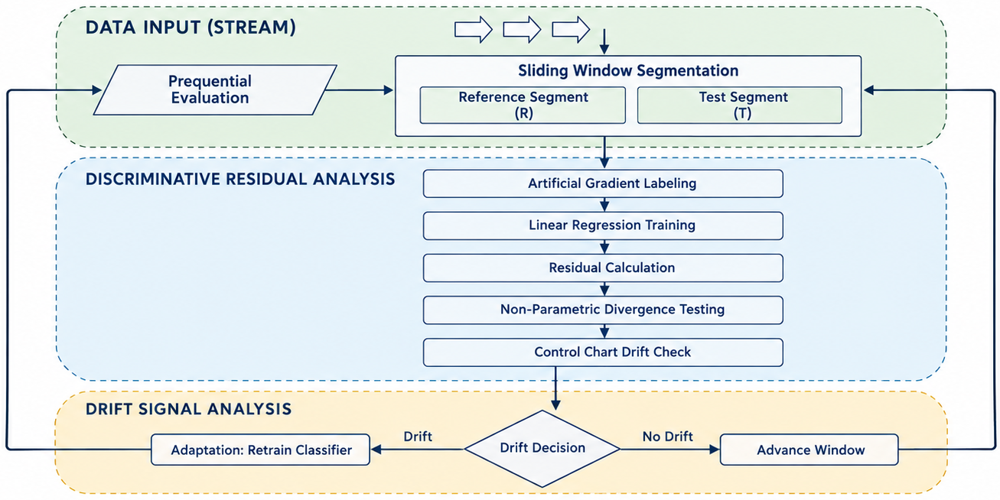
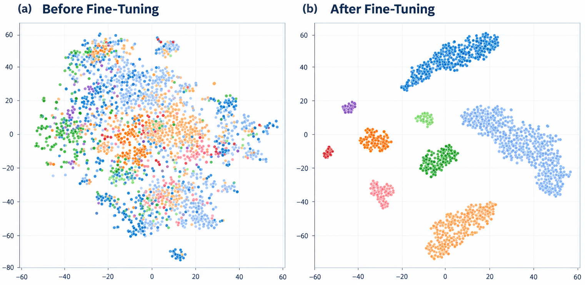
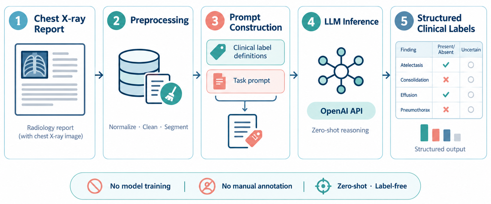

Featured Research Highlights

ReDiST: Lightweight Unsupervised Drift Detection
A novel residual analysis framework enabling fast, accurate, unsupervised drift detection in intelligent systems handling high-speed data streams without label feedback.

CONKER: Contrastive Knowledge for Bug Classification
Harnesses contrastive knowledge-enhanced representation retrieval to accurately categorize user reviews into actionable and well-structured software bug reports for developers.

Zero-Shot Classification of Chest X-ray Reports
A novel prompt-based zero-shot framework for accurate, label-free extraction of structured clinical labels from chest radiology reports using large language models.
Research & Applied Projects
Development of a Runoff Estimation System Using Advanced Artificial Intelligence Techniques
Designing and deploying predictive deep learning models for accurate surface runoff estimation and river basin management. The system integrates real-time hydrological telemetry with advanced machine learning architectures to optimize regional water resource planning and flood prevention.
Unsupervised Concept Drift Detection in High-Speed Data Streams Using Residual Distribution Analysis
Investigating robust statistical residual estimation techniques to proactively identify abrupt and gradual distribution shifts in real-time streaming environments, eliminating the dependency on ground-truth label feedback.
Selected Publications
Abstract: Computational depression detection has reached a saturation point with standard end-to-end deep learning paradigms. To navigate the rapid proliferation of highly complex models, this systematic scoping review analyzes 87 primary post-LLM studies, spanning both “in-the-wild” social media and structured clinical interactions, published primarily between January 2024 and April 2026. Evaluated alongside 7 foundational 2023 baselines (totaling 94 core methodology papers out of 111 cited references), these works mark a distinct methodological transition from isolated feature engineering to multimodal and architectural synthesis. We introduce a novel taxonomy that categorizes these emerging approaches into four information fusion paradigms: (1) Architecture Fusion, which hybridizes heterogeneous neural components to capture complementary spatiotemporal dependencies; (2) Knowledge Fusion, which injects structured external clinical knowledge (e.g., DSM-5 ontologies) into neural pipelines to bridge the semantic gap; (3) Generative Fusion, which integrates in-context learning (ICL), retrieval-augmented generation (RAG), and parameter-efficient fine-tuning (PEFT); and (4) Data-Level Fusion, which addresses multimodal alignment, dynamic fusion timing, and temporal modeling. Our critical analysis reveals that while zero-shot large language models (LLMs) offer broad semantic reasoning capabilities, fine-tuned encoders and hybrid architectures integrated with domain-specific knowledge currently provide a more rigorously validated balance of reliability, explainability, and performance. We conclude by exposing the “illusion of accuracy” prevalent in proxy-labeled benchmarks and outlining strategic directions for developing clinically valid, privacy-preserving detection systems suitable for real-world clinical workflows.

Abstract: Concept drift in non-stationary data streams poses challenges to machine learning models by degrading predictive performance over time. Although unsupervised detectors resolve the practical limitation of label unavailability, many current approaches rely on fully adaptive frameworks where both the statistical reference and feature representation evolve continuously. This reliance on fluid baselines can lead to representational erosion, where the detector gradually loses its memory of the original concept, making it desensitized to significant, abrupt deviations. To address this deficiency, we propose Concept Anchor Drift Detection (CADD), a novel unsupervised framework. CADD establishes a stable semantic baseline by training a deep autoencoder a single time on an initial, trusted segment of the data stream. The resulting frozen encoder serves as a constant “Concept Anchor,” projecting all subsequent data into a fixed, semantically meaningful latent space. Drift is then detected by applying a dimension-wise Kolmogorov-Smirnov test to a sliding window of these anchored latent vectors. This design balances stability (via the fixed encoder) with plasticity (via the sliding window), preventing erosion while allowing adaptation to new valid concepts. A broad empirical evaluation on real-world and synthetic benchmarks demonstrates that CADD achieves highly competitive predictive performance, particularly excelling among single-model detectors in scenarios characterized by abrupt and significant distributional shifts. While acknowledging trade-offs in environments dominated by gradual or seasonal changes, CADD significantly outperforms adaptive baselines on abrupt drift benchmarks, validating the methodological value of a fixed representational anchor and introducing a robust, proactive tool for maintaining model reliability in evolving environments.

Abstract: E-commerce platforms face the challenge of the “cold-start” problem, where new products lack user reviews crucial for buyer decisions. This paper introduces a novel Large Language Model (LLM)-driven approach for generating high-quality augmented reviews for cold-start products by utilizing reviews from semantically similar “warm” products. The proposed method follows a two-stage framework: Initially, an advanced semantic retrieval mechanism is deployed, enhanced through a data-driven attribute weighting strategy. This attribute weighting is derived via a zero-shot aspect-based segmentation technique, guided by a strategically engineered prompting approach to optimize attribute weights. This initial stage ensures the precise extraction of semantically relevant warm product reviews. Subsequently, in the second stage, these retrieved segments are refined, filtering out irrelevant content to maximize alignment with the cold product’s characteristics. Evaluated on two comprehensive datasets from CNET.com (Digital Cameras and MP3 Players), the method demonstrates a substantial average improvement of 65% in ROUGE score metrics compared to traditional baseline approaches (e.g., Query Likelihood) across varying review lengths. Furthermore, it achieves superior performance compared to the state-of-the-art embedding-based method, attaining a ROUGE-2 F1-score of 0.093 on Digital Cameras and 0.113 on MP3 Players (representing improvements of approximately 3%). By enhancing the informativeness and reliability of generated reviews, this work presents a significant step forward in mitigating the cold-start problem, enhancing the online e-commerce experience for both buyers and sellers.
Abstract: Accurately extracting structured clinical labels from unstructured chest radiology reports, particularly the MIMIC-CXR dataset, is critical for robust Clinical Decision Support Systems. However, conventional supervised deep learning faces major challenges: reliance on expert-annotated datasets, which are costly and time-consuming to curate, and the computational overhead of training or fine-tuning complex models. To circumvent these limitations, this study proposes a Prompt based Zero Shot Learning Framework that leverages the semantic reasoning capabilities of pre trained LLM to classify radiology reports without requiring gradient-based training or labeled data. We systematically investigate the impact of various text preprocessing pipelines and prompt engineering strategies, including task specific prompts, Persona based instructions, Chain of Thought reasoning, and Ensemble Prompting, alongside mechanisms for managing label uncertainty. Experimental results demonstrate that the optimal configuration, utilizing the IMPRESSION section of reports with specific uncertainty handling, achieves a weighted average F1 score of 0.85 and an Area Under the Curve of 0.92. These results significantly outperform traditional rule based labelers and unsupervised baselines in the domain of clinical text classification. This study substantiates the potential of NLP and prompt engineering to automate medical report structuring, offering a scalable and label free alternative to traditional supervised learning for healthcare applications.
Abstract
Context: Accurate and timely identification of software defects from user-generated app reviews is crucial for efficient software maintenance. However, automated classifiers face challenges with the volume and heterogeneity of review text, often struggling with generalization, decision transparency, and learning from limited labeled examples per bug category.
Objective: This paper introduces CONKER (CONtrastive Knowledge Enhanced Retrieval), a novel framework to address these issues by improving accuracy and providing inherent interpretability for multi-class app review bug classification.
Methods: CONKER employs a two-stage process. First, a transformer-based sentence encoder is fine-tuned using supervised contrastive learning (Multiple Negatives Ranking Loss) on the MABLE benchmark to create a discriminative embedding space. Second, a classification-by-retrieval mechanism assigns labels by matching new reviews against curated class-specific exemplars. The framework is evaluated using 10-fold cross-validation, an ablation study, and a human-in-the-loop study with professional developers.
Results: On the MABLE dataset, CONKER achieves a new state-of-the-art weighted F1-score of 0.8133. Critically, it also attains a Macro F1-score over 13 percentage points higher than the strongest baseline, demonstrating superior performance on minority classes. A new zero-shot experiment provides quantitative evidence of its strong cross-platform generalization, where CONKER outperforms a RoBERTa baseline by 10.1 percentage points on a developer-annotated Apple App Store dataset. This is complemented by a human-in-the-loop study that validated the practical utility of CONKER's exemplar-based explanations. Ablation studies confirm that both the contrastive fine-tuning and the per-class retrieval architecture are fundamental to this multi-faceted success.
Conclusion: Contrastive learning-driven retrieval is a scalable, interpretable, and high-fidelity approach for nuanced text categorization in empirical software engineering. The CONKER framework demonstrates that by engineering a task-specific semantic space, it is possible to reconcile high predictive accuracy with the transparency required for practical software maintenance workflows.
Abstract: The long-term reliability of deployed intelligent systems is critically undermined by concept drift, leading to silent performance degradation and catastrophic failures in high-stakes applications. Current drift detectors force a debilitating compromise: practitioners must choose between slow, label-dependent methods that are impractical for real-time streams, or faster unsupervised methods that lack the sensitivity to detect complex distributional shifts. This paper introduces ReDiST (Residual Distribution Shift Tester), a novel unsupervised framework that overcomes this compromise through a new paradigm: discriminative residual analysis. Instead of comparing complex data distributions directly, ReDiST reframes drift detection as a computationally efficient analysis of the error patterns from a lightweight probe model trained on a synthetic temporal task. This approach efficiently translates complex, high-dimensional shifts into a robust, one-dimensional statistical signal. A comprehensive evaluation against twelve state-of-the-art detectors on eleven benchmarks demonstrates that ReDiST: (1) achieves predictive accuracy statistically on par with top-tier supervised ensembles, without requiring any ground-truth labels; (2) ranks first in computational efficiency across all datasets, running up to 58 times faster than its most accurate supervised competitor; and (3) delivers a powerful combination of accuracy, speed, and label-free operation, validated through extensive internal signal and sensitivity analysis. ReDiST provides a practical, scalable solution for building robust, adaptive, and reliable intelligent systems capable of operating effectively in dynamic real-world environments.
Abstract: Due to the rapid growth of documents and manuscripts in various languages all over the world, plagiarism detection has become a challenging task, especially for cross lingual cases. Because of this issue, in today's plagiarism detection systems, a candidate retrieval process is developed as the first step, in order to reduce the set of documents for comparison to a reasonable number. The performance of the second step of plagiarism detection, which is devoted to a detailed analysis of the candidates is tightly dependent on the candidate retrieval phase. Regarding its high importance, the present study focuses on the candidate retrieval task and aims to extract the minimal set of highly potential source documents, accurately. The paper proposes a fusion of concept-based and keyword-based retrieval models for this purpose. A dynamic interpolation factor is used in the proposed scheme in order to combine the results of conceptual and bag-of-words models. The effectiveness of the proposed model for cross language candidate retrieval is also compared with state-of-the-art models over German-English and Spanish-English language partitions. The results show that the proposed candidate retrieval model outperforms the state-of-the-art models and can be considered as a proper choice to be embedded in cross-language plagiarism detection systems.
Abstract: The exponential growth of documents in various languages throughout the web, along with the availability of several editing and translation tools have made the cross-language plagiarism detection a challenging issue. Regarding its high importance, the present study focuses on the task of cross-language text alignment also known as detailed analysis which works on the outputs of the source retrieval step of cross-language plagiarism detection systems. The paper proposes a two-level matching approach with the aim of considering both syntactic and semantic information to align plagiarism fragments from the source and suspicious documents, accurately. At the first level, a vector space model which employs a multilingual word embeddings based dictionary and a local weighting technique is used in order to extract a minimal set of highly potential candidate fragment pairs rather than considering all possible pairs of fragments. This step also contains a dynamic expansion technique to cover more candidate pairs aiming at improving the system’s recall. It is followed by a more precise algorithm that examines the candidate pairs at the sentence level using a graph-of-words representation of text. As a result, by modelling both the words and their relationships, an acceptable increase in the system’s precision which is the goal of the second level is also observed. To identify evidence of plagiarism, i.e. potential cases of unauthorized text reuse, the algorithm tries to find maximum cliques from the match graph of source and suspicious texts. With this two-level investigation, the approach is capable to discriminate true plagiarism cases from the original text. The experimental results on different datasets such as PAN-PC-11, PAN-PC-12, and SemEval-2017 show that the proposed cross-language text alignment approach significantly outperforms the state-of-the-art models and can be fed into an expert system for further improvement of cross-language plagiarism detection. The source codes are publicly available on GitHub1, for the purposes of reproducible research.
Teaching & Courses
- Natural Language Processing (NLP)
- Deep Reinforcement Learning (Deep RL)
- Advanced Information Retrieval (Advanced IR)
- Special Topics in Computer Engineering
- Data Structures
- Operating Systems
- Multimedia Systems
- Discrete Mathematics
- Data Mining
- Compiler Design
- Theory of Languages and Automata
- Database Systems
- Software Engineering
Graduate Thesis Supervision
Leadership, Talks & Academic Service
-
3rd National Conference on Innovation in Green Industries
Executive Secretary • National Level (2025) -
From Data to Insight: The Entry of AI into Life Sciences
Invited Speaker • Univ. of Mazandaran (2025) -
Big Data Analysis (Hadoop, Spark, Azure, Kafka)
Session Chair & Organizer • Univ. of Mazandaran (2023) -
Information Technology (IT) Committee
Core Member • Univ. of Mazandaran (2023 – Present)
Serving as an active reviewer for high-impact international journals:
Contact & Collaboration
I welcome discussions regarding academic collaborations, prospective student research, and industry AI partnerships:
Email: m.roostaee@umz.ac.ir
Office: Faculty of Engineering and Technology, University of Mazandaran, Babolsar, Iran